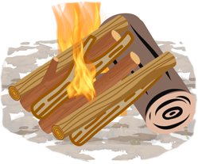

Espíritu del fogón
El fogón es el corazón del campamento. Alrededor de su calor y su luz, los acampantes se reúnen para cantar las canciones queridas, escuchar los cuentos emocionantes, realizar dinámicas grupales. Es el espacio del grupo como unidad de acción y creación, en donde interpretan su espíritu campamentil a través de dinámicas como show, concursos, sketch preparados por ellos mismos. Finalemente se deja un espacio de reflexión con uno mismo a medida que las llamas se apagan y llega la hora de dormir.
Alma de un fogón
- La yesca: hace referencia a los residuos secos de árboles, césped, hongos o cualquier otro material que arde con facilidad. Su función es servir como chispa de inicio para el fuego.
- Vara o leña fina: Es la siguiente capa de la fogata. Está compuesta por ramas pequeñas y delgadas. Su función es servir como estructura o armasón interna de la fogata y tiene una duración mayor a la yesca, es decir, no se consume tan rápido por el fuego.
- Leñas gruesas: Estas tardan mucho más en encender, pero son las que permiten conservar el fuego por más tiempo. Están ubicadas en la parte más externa de la fogata.
Fogones recomendables
Para actividades masivas el más recomendable es el fuego pagoda. La fogata tipo pagoda también es conocida como fogata consejo o ascenso y produce un fuego solido que va a durar por mucho tiempo y cuyas brasas te permitirán hornear, calentar, proporcionar buena iluminación, etc. Para armarla se colocan en el suelo 2 grandes troncos perpendiculares al viento. Luego se construyen los pisos siguientes colocando ramas grandes y medianas en forma paralela. Finalmente se la rellena con yesca y ramas pequeñas lo que producirá mayor duracion del fuego.
Estructura de fogatas para generar calor / cocinar
Fogata tipi: Esta estructura clásica en forma de cono tiene el nombre de la vivienda indígena a la que se asemeja. Una base circular amplia permite un amplio flujo de oxígeno, por lo que genera mucho calor. También es fácil alimentar agregando más palos contra su estructura vertical. Debido a que este fuego consume madera rápidamente y requiere mantenimiento constante, es mejor usarlo como un fuego de calentamiento rápido o para tareas de cocina pequeñas, como hervir el agua (esperar a que la estructura se derrumbe, luego poner la olla de agua sobre las brasas y agregar pequeños palos alrededor la olla para mantener encendido el fuego). Una táctica bastante común es utilizar una estructura de tipi sólo al inicio para iniciar el fuego de forma rápida y efectiva y luego transitar a la otra estructura de fogata que requieras.
fogata acostada o inclinada: La fogata recostada o inclinada (fogata lean-to por su nombre en inglés) es una variante de la fogata tipi, y se trata de una fogata ideal para cuando estás en un lugar con viento. Este tipo de estructura aprovecha su forma para cortar el viento, lo que te permitirá iniciar el fuego aún en contextos de clima un poco adversos. Para construir la versión más simple, coloque un tronco grueso en el suelo y coloque la yesca al lado, en el lado de sotavento del viento. Inclinar palos pequeños contra el tronco en un ángulo que pasa por encima de la yesca. Cuando enciendes la yesca, prende fuego a la leña y comienza a quemar el tronco más grande. Agregue lentamente palos más grandes para acumular fuego y agregue otro tronco de tamaño completo cuando esté listo.
